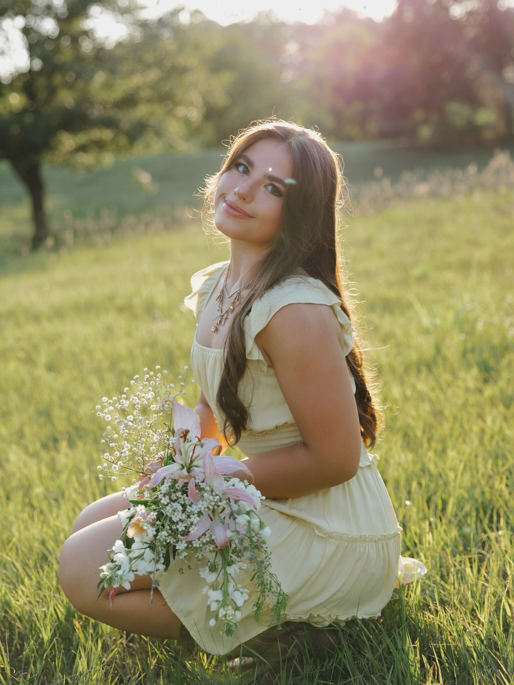

Welcome to Layla's bioSite

Welcome to the personal biography website of Layla Bland. This website shares her story, accomplishments, interests, and future goals.
Layla is a creative and determined individual who enjoys expressing herself through art, staying active in fitness, and continuing to grow in her faith.
Get to Know Layla
Creativity
Layla enjoys painting, drawing, fashion, and exploring different forms of artistic expression.
Athletics
As a two-time state champion cheerleader and competitive powerlifter, Layla has demonstrated dedication and determination.
Future Goals
Layla plans to graduate from college and eventually open a women-only gym where women can focus on their health and fitness in a supportive environment.
Her Story
Born in Doha, Qatar, and raised in Papillion, Nebraska, Layla experienced different cultures that helped shape her perspective on life.
Her journey includes achievements in academics, athletics, and the arts. Through hard work and determination, she continues to pursue her goals.
Learn More About Layla